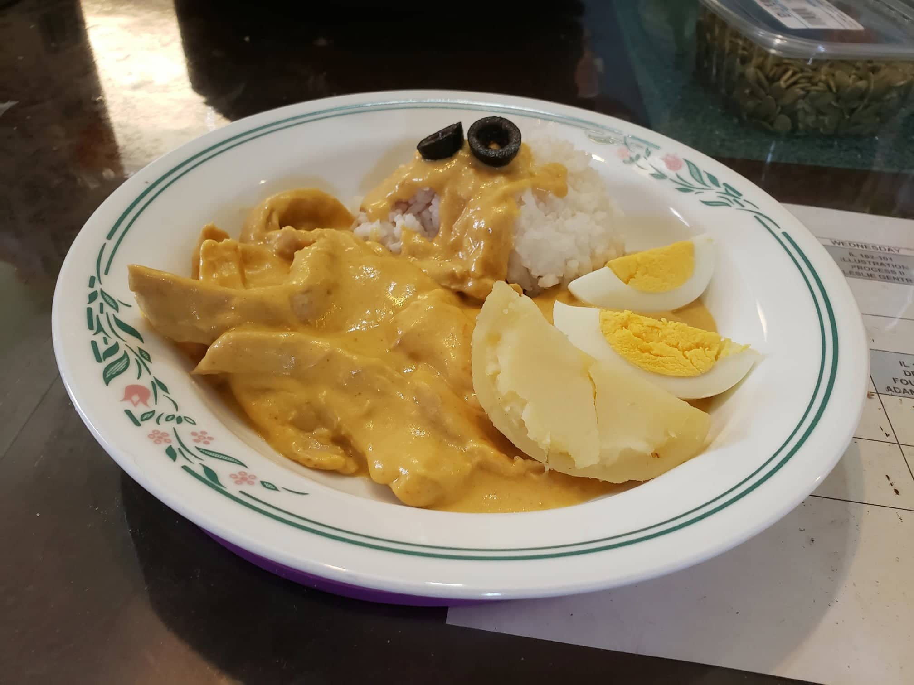

Ají de Gallina

Ingredients:
- 1 1/2 lb Chicken breast
- 32 oz Chicken stock
- 4 slices White bread
- 6 oz Evaporated milk
- 3-4 Ají amarillo chili pepper, deseeded and deveined, cut into chunks
- 1/2 cup Vegetable oil
- 2 cloves Garlic, minced
- 1 large Red onion, diced
- 3 tbsp Walnuts, coarsely chopped
- 3 tbsp grated Parmesan cheese
- 1/4 cup Black olives, sliced
Instructions:
- Place the white bread and evaporated milk into a bowl and let soak.
- Place the chicken breasts in a pot with the chicken stock and bring to a simmer. Poach the chicken for 15 minutes or until just cooked through.
- Remove the chicken from the stock and let cool. Strain and reserve the stock. Once the chicken is cooled, shred the chicken into bite sized pieces.
- Place ají peppers into a blender with the oil and blend until smooth. Then add the pepper and oil mixture to a pan with the onions and garlic. Sauté until the onions become translucent, then remove from heat and let cool.
- While the onions and garlic cool, add the soaked white bread, walnuts, and parmesan cheese into the blender and blend until smooth. Then add the onion and garlic mixture to the blender and blend until combined.
- Bring the mixture to a large pan with 1 1/2 cups of the reserved chicken stock. Mix thoroughly and bring to a simmer.
- Add the chicken to the pan and heat until warmed through, adding more chicken stock if the sauce is too thick.
- Remove the pan from the heat and mix in the olives. Serve with white rice, boiled gold potatoes, and/or boiled eggs.